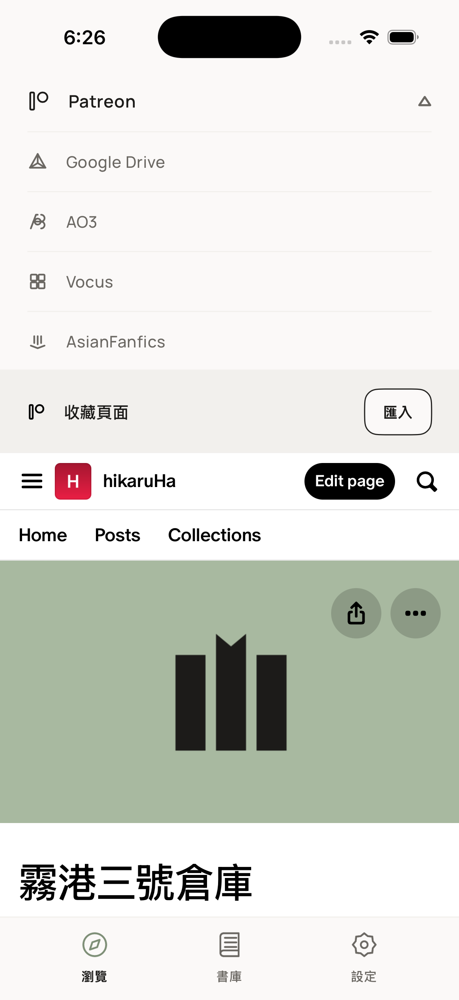
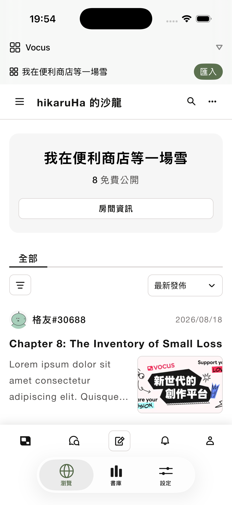
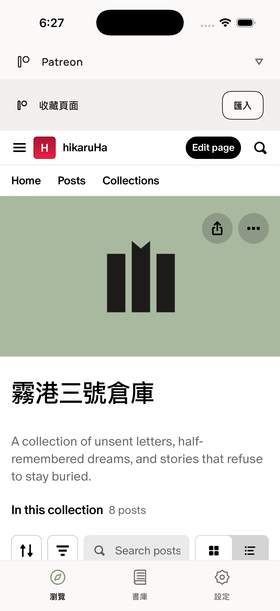
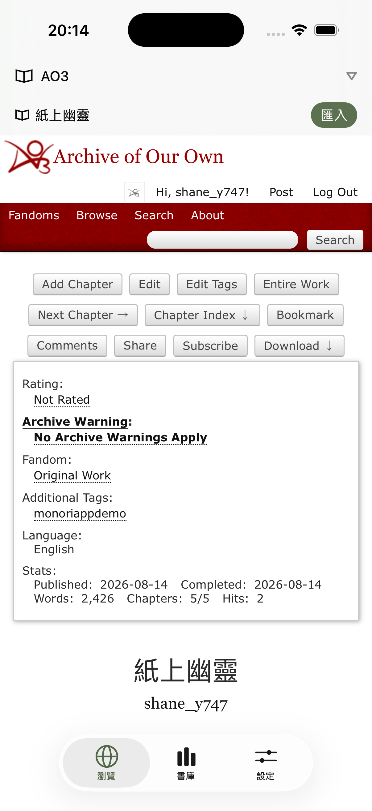
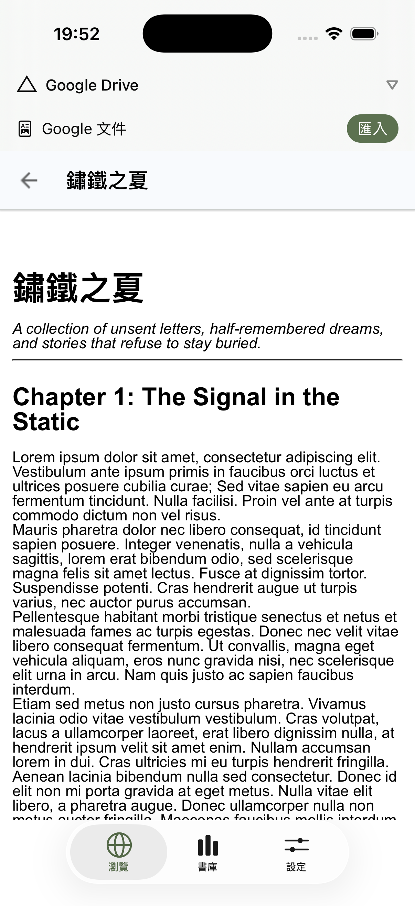
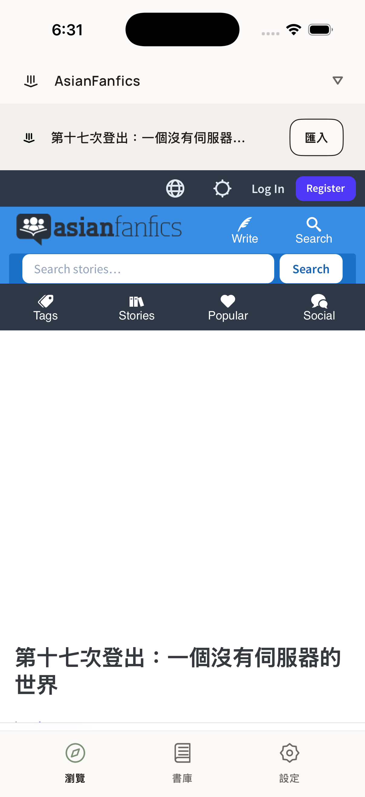
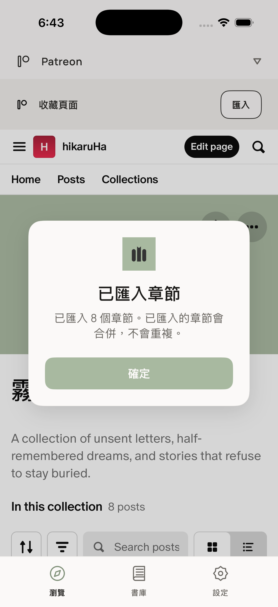
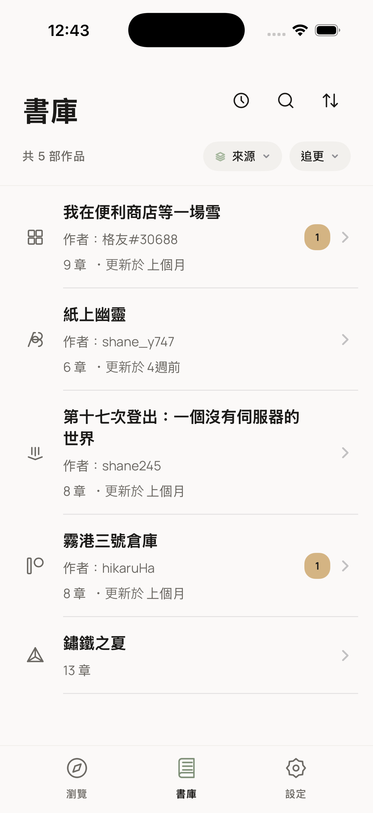
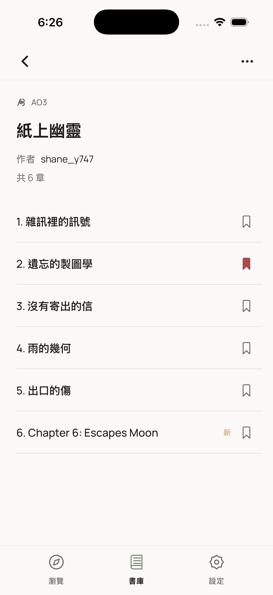
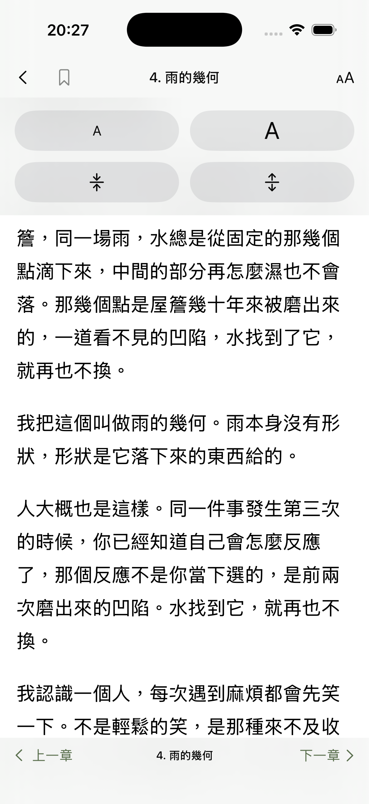

This guide is provided for App Review to explain how to test Monori's main features.
Monori is a local-first reading app. It allows users to browse content through supported websites and explicitly import accessible content into a local Library for reading.
Monori does not operate a backend server, content proxy, cloud library, or cross-user content service.
Monori has three main tabs:
| Tab | Purpose |
|---|---|
| Browser | Browse supported websites and import content |
| Library | Read imported works and manage reading progress |
| Settings | Configure app and reading preferences |
The source selector at the top of the Browser tab provides five supported sources:
Each source uses its own website session.

The following works were created or uploaded by the developer specifically for App Review testing.
They are intended to provide predictable content without requiring reviewers to search for arbitrary third-party works.
| Source | Login | Demo account / search | Demo content |
|---|---|---|---|
| Vocus | No | Search hikaruHa | 「我在便利商店等一場雪」 |
| Patreon | Yes | Search hikaruHa | 「霧港三號倉庫」 |
| AO3 | No | Search shane_y747 | 「紙上幽靈」 |
| Google Docs | Yes | Shared with me | 「鏽鐵之夏」 |
| AsianFanfics | No | Search monoriappdemo | 「第十七次登出：一個沒有伺服器的世界」 |
Google Docs requires a Google account. The credentials are provided in App Store Connect's App Review Information.
Patreon uses the same Google account for sign-in (tap "Continue with Google" on the Patreon login page).
The Import button appears only on supported page types.
For App Review testing, please use the demo content listed below.
Login required: No
hikaruHa.
The imported work will appear in the Library tab.
Login required: Yes
hikaruHa.
The Patreon demo content belongs to the developer's account.
The Collection page is the intended testing page for the Patreon importer.
Login required: No
shane_y747.
No account is required for this demo work.
Login required: Yes

The document was created by the developer specifically for App Review testing.
Google Docs is treated as a static document. Automatic chapter-update detection is not available for this source.
Login required: No
monoriappdemo.
No account is required for this demo story.
After a successful import, Monori displays a confirmation message showing the number of imported chapters.

When the same work is imported again, existing chapters are merged with the collection instead of creating duplicate chapters.
After importing a work, open the Library tab.
Imported works appear as collections in the user's local reading library.

Tap a collection to view its chapters.

The Library provides:
Open any imported chapter to enter the Reader.

The Reader provides the following features:
These features are provided by Monori and are available across the supported sources.
The bottom toolbar provides Previous Chapter and Next Chapter navigation.
This navigation is available across all five supported sources.
Tap the bookmark control in the Reader to bookmark the current chapter.
Bookmarks are stored locally on the device.
Open the reading preferences panel using the T control in the Reader.
The following settings are available:
These reading preferences are provided by Monori and are available across all five supported sources.
Collections can be marked as being followed.
For supported dynamic sources, Monori can check whether new chapters have appeared.
When a new chapter is detected:
Automatic update detection requires an actual new chapter to be published on the source website.
Therefore, App Review may not see a new-chapter notification during a normal review session because the developer's demo works are intentionally stable.
Google Docs does not support automatic chapter-update detection.
A Google Docs document is treated as a static document rather than a continuously updated chapter-based source.
Monori does not have its own user account system.
For sources that require authentication, the user signs in directly to the corresponding website inside the Browser.
The following demo sources do not require login:
The following demo sources require login:
Both Patreon and Google Docs use the same Google account. The credentials are provided in App Store Connect's App Review Information.
Monori does not ask the reviewer to create a Monori account.
Monori does not operate a backend server.
Website content is accessed directly through the website's own infrastructure using the WebView.
Monori does not act as a network proxy between the user and supported websites.
Depending on the source and import method, imported data may be stored locally on the device for the Library and Reader.
Local data may include:
This data is not uploaded to a Monori cloud service.
Monori does not provide:
The supported websites control their own page layouts and authentication flows.
A website layout or authentication change can temporarily affect the Import button or Reader presentation.
Automatic update testing requires a new chapter to exist on the source website.
The demo content is intentionally stable, so this feature may not produce a notification during App Review.
Google Docs is treated as a static source.
It supports importing and reading but does not support automatic chapter-update detection.
Only Patreon and Google Docs require the App Review credentials supplied in App Store Connect.
The other three demo sources can be tested without an account.
Please make sure the exact demo page listed in this guide is open.
The Import control is context-sensitive and appears only when Monori recognizes a supported page type.
Please wait for the website to finish loading before looking for the Import control.
If the Google login option is unavailable inside Patreon, use the email/password credentials supplied for App Review if available.
This behavior depends on Google's authentication policies for embedded web environments.
This is expected if no new chapter has been published since the last check.
Automatic update detection is not simulated by Monori.
| Feature | Patreon | Vocus | AO3 | Google Docs | AFF |
|---|---|---|---|---|---|
| Browse in Browser | ✓ | ✓ | ✓ | ✓ | ✓ |
| Import | ✓ | ✓ | ✓ | ✓ | ✓ |
| Library | ✓ | ✓ | ✓ | ✓ | ✓ |
| Previous / Next chapter | ✓ | ✓ | ✓ | ✓ | ✓ |
| Bookmarks | ✓ | ✓ | ✓ | ✓ | ✓ |
| Font size | ✓ | ✓ | ✓ | ✓ | ✓ |
| Line spacing | ✓ | ✓ | ✓ | ✓ | ✓ |
| Automatic chapter updates | ✓ | ✓ | ✓ | — | ✓ |
If App Review encounters a problem that is not covered by this guide, please use the contact information provided in App Store Connect.